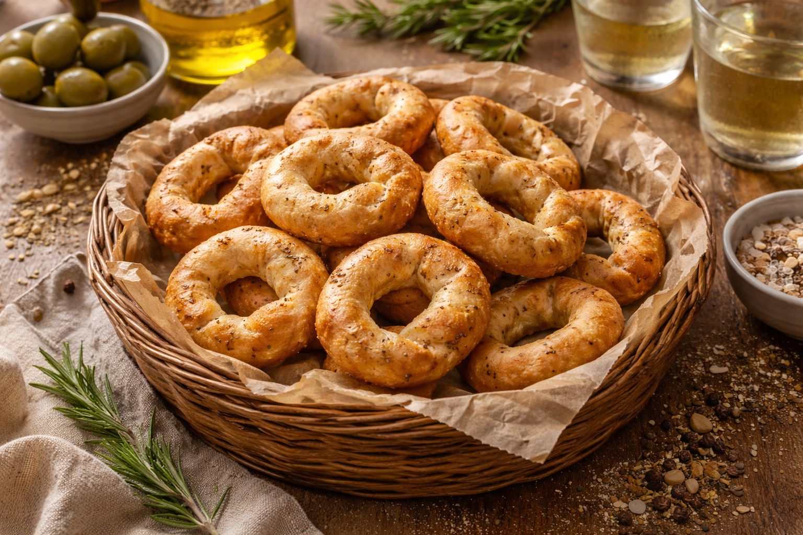

🍪 Taralli Pugliesi
Les Taralli Pugliesi sont des biscuits traditionnels de la région des Pouilles. Croustillants, parfumés à l'anis, et légèrement salés, ils sont parfaits pour l'apéritif ou un en-cas. Ces biscuits peuvent être préparés facilement à la maison et partagent le goût authentique de la cuisine du Sud de l'Italie.
Informations de la recette
⏱ Préparation : 1 h 30 | 👥 Pour 8 personnes | ⚙️ Difficulté : Facile
🫒 Ingrédients
- 500 g de farine de blé type 00
- 100 ml d'huile d'olive extra-vierge
- 100 ml de vin blanc sec
- 1 c. à soupe de graines d'anis
- 1 c. à café de sel fin
- 1 c. à soupe de sucre
- Eau tiède (si nécessaire, pour ajuster la pâte)
👩🍳 Préparation
- Préparer la pâte : Mélangez la farine, l'huile d'olive, le vin blanc, le sel, le sucre et les graines d'anis dans un grand bol. Ajoutez de l'eau tiède petit à petit pour obtenir une pâte lisse et souple.
- Pétrir : Pétrissez la pâte pendant environ 10 minutes pour qu’elle devienne élastique et homogène. Si la pâte est trop collante, ajoutez un peu de farine.
- Faire reposer : Couvrez la pâte avec un linge propre et laissez-la reposer pendant 30 minutes à température ambiante.
- Façonner les Taralli : Prenez une petite portion de pâte et roulez-la pour former un boudin d’environ 10 cm de long. Repliez-le pour former une petite boucle (un anneau). Répétez l'opération avec toute la pâte.
- Cuire : Portez à ébullition une grande casserole d’eau salée. Plongez-y les Taralli quelques-uns à la fois, jusqu’à ce qu’ils remontent à la surface (cela prend environ 1 à 2 minutes). Retirez-les à l’aide d’une écumoire et déposez-les sur un torchon propre pour les sécher.
- Cuisson au four : Préchauffez le four à 200°C (chaleur tournante). Placez les Taralli sur une plaque de cuisson recouverte de papier sulfurisé. Faites cuire pendant 20–25 minutes ou jusqu'à ce qu’ils soient dorés et croustillants.
- Servir : Laissez refroidir sur une grille avant de les déguster. Les Taralli peuvent être conservés dans une boîte hermétique pour plusieurs jours.
💡 Astuce du chef
Vous pouvez ajouter des graines de fenouil ou de cumin dans la pâte pour varier les saveurs. Pour une version plus légère, vous pouvez aussi les cuire uniquement au four sans les faire bouillir.
📜 Origine
Les Taralli Pugliesi sont une spécialité typique de la région des Pouilles, dans le sud de l'Italie. Ils sont consommés traditionnellement lors des fêtes ou en apéritif, et sont appréciés pour leur texture croquante et leur parfum subtil d'anis. Ils font partie des incontournables de la cuisine du Sud de l'Italie.